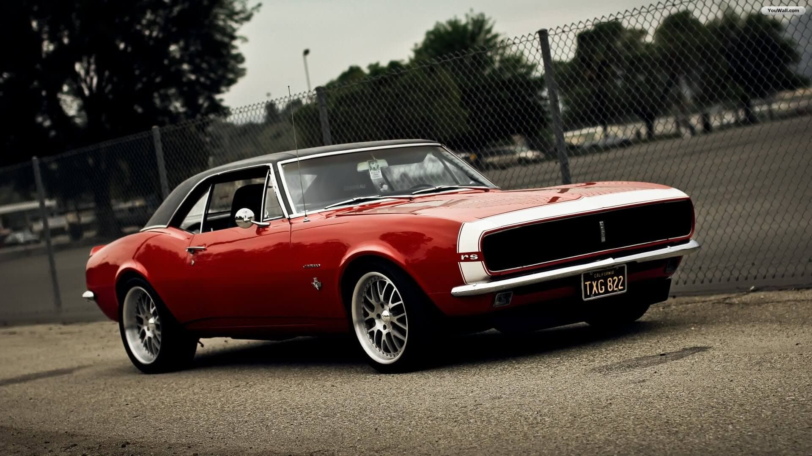
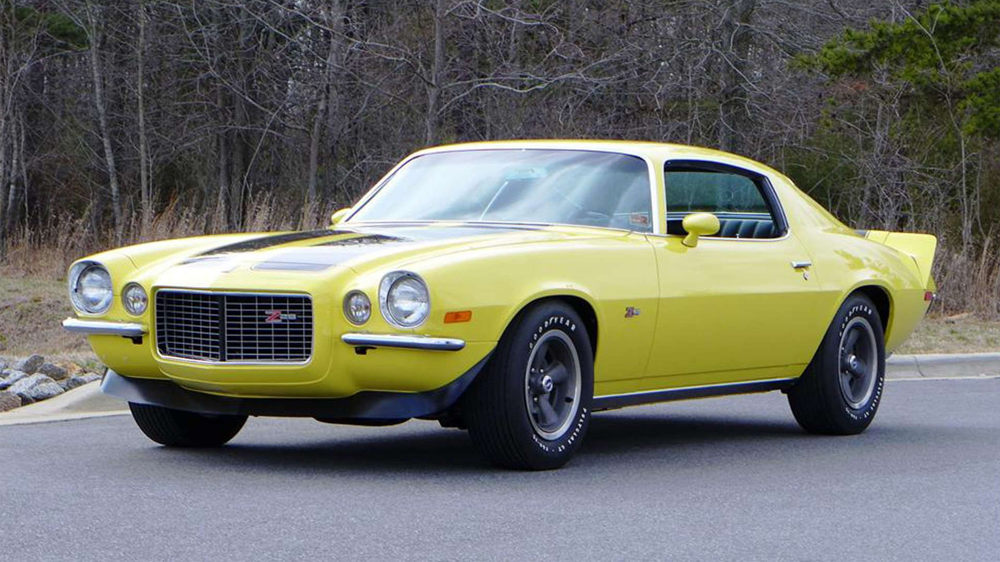
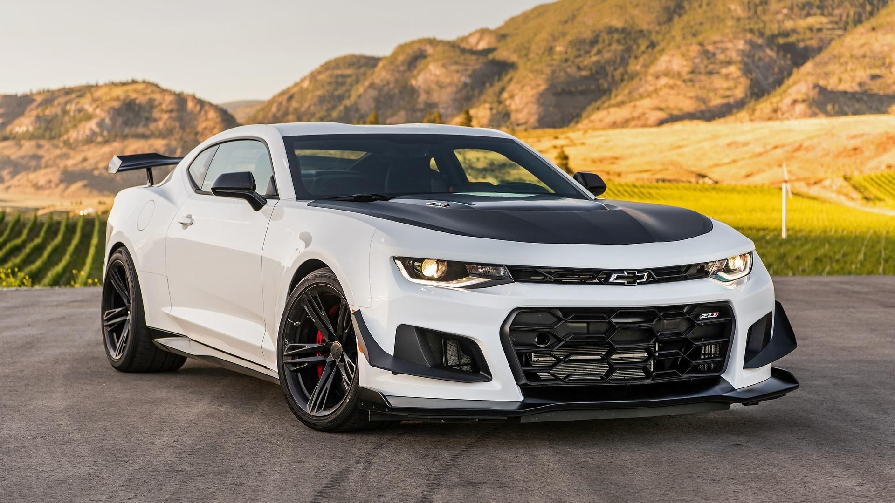

Camaro
Bakgrunn
Camaro-serien er produsert av den kjende produsenten Chevrolet. Heilt sidan 1953 har Chevrolet produsert Corvette, men dette var ikkje heilt ein konkurrent med Ford sin Mustang. Det var fordi Corvetten var dobbelt så dyr og hadde berre to seter, i forhald til Mustangen sine 5. Derfor byrja dei å produsere ein ny serie, nemleg Camaro-serien. Camaroen blei ein hit, og konkurrerte godt med Mustangen. Desse to konkurrerer framleis i dag om kven som er best i klassen med mykje hestekrefter og mange sittjeplassar.
LOGO
Viktige periodar
1967-1969

Den aller første modellen av Camaroen. Den kom med enten ein rekke-seks motor eller ein V8. Den kraftigaste av dei kunne yte heile 290 hestekrefter. Produksjonen varte berre i to år, men dei byrja raskt igjen med produksjonen av eit nytt design.
1970-1981

Den andre modellen av Camaroen blei lansert i februar i 1970. Den hadde nytt design, og generelt forbedra. Chevrolet hadde gjort ein skikkeleg jobb med denne, og den blei kåra til ein av dei 10 beste bilane i verda av Road & Track.
1982-1992

Den tredje modellen av Camaroen, ikkje akkurat ein forbedring meinte mange. Camaroen mista den kjende V8-motoren sin, og inn kom ein firesylindra motor. Den var ikkje på langt nær like kraftig som tidlegare, men den var lettare. Det vil seie at den var betre i svingane. Dessverre var dei neste 20 åra ein dårleg periode for Camaroen.
2015-2019

Endeleg er Camaroen tilbake til røtene sine. Med eit meir moderne desing, men den har fortsatt kjennetegn frå den klassiske Camaroen på 60- og 70-talet. Betre motor og meir moro, med heile 455 hestekrefter.